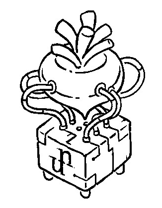

Action at a distance is an anti-pattern in computer science in which behavior in one part of a program modifies operations in another part of the program. This anti-pattern should be avoided whenever possible, but if wielded carefully SMC can become a practical ally when writing Uxntal.

Tal is the programming language for the Uxn virtual machine.
Uxn programs are written in a stack-based flavor of assembly designed especially for this virtual machine. TAL files are human-readable source files, ROM files are uxn-compatible binary program files; applications that transform TAL files into ROM files are called Assemblers.
To get started, equip yourself with an emulator and assembler for your system.
- Download emulator & assembler, 40kb
- Introduction to Uxntal, online book
Uxntal Syntax
In concatenative programming, there are no precedence rules, the calculations are merely performed in the sequence in which they are presented. The order with which elements come off a stack is known as last in, first out. In the stack a b c, the c item was the last to be added, and will be the first to be removed.
#01 DUP ADD #03 MUL06
Uppercased opcodes are reserved words, lowercase hexadecimal numbers are bytes and shorts, parentheses are comments, curlies are lambdas, and square brackets are used for organization.
The first line begins with the absolute padding token |10 which moves the program location to the address 0x0010, and will allow us to define @labels and &sublabels for the various ports of the Console device so that we can reference them in our code by name. To learn more, see Uxntal Structs.
The second segment moves the program location to the address 0x0100, which is where the first page of memory ends, and where all Uxn programs begin. Next is a comment, the arrow symbol indicates that the following operation is a vector, and will terminate with BRK. To learn more, see Uxntal Notation.
Then, with ;hello-world, we push the absolute address, made
of two bytes, of the label hello-world to the stack, which points
to a series of characters in memory. A hexadecimal number or label pushed to
the stack in this fashion is called a literal, as opposed to a value
stored in memory. Next, we call the @print-text routine.
Both &while and @while are ways to define labels, but using &while will automatically prefix our new label with the name of the last @label, in this example print-text/while.
| Padding Runes | Literal Hex Rune | ||||||
|---|---|---|---|---|---|---|---|
| | absolute | $ | relative | # | literal hex | ||
| Label Runes | Ascii Runes | ||||||
@ | parent | & | child | " | raw ascii | ||
| Addressing Runes | Pre-processor Runes | ||||||
, | literal relative | _ | raw relative | % | macro-define | ~ | include |
. | literal zero-page | - | raw zero-page | ||||
; | literal absolute | = | raw absolute | ||||
| Immediate Runes | |||||||
! | jmi | ? | jci | ||||
Next, the LDAk opcode takes the absolute address on the stack, and loads the byte in memory found at that address to the top of the stack, in this case, the ASCII value of the letter H. That value is sent to the device port #18, defined by our Console enum, which prints that character to the terminal.
We increment the absolute address found on top of the stack with INC2, because the address is made of two bytes. We load the incremented value, next we do a conditional jump with ?&while for as long as the item on the stack is not zero. We use POP2 to remove the address on the stack and keep the stack clean at the end of the subroutine.
Lastly, we encounter JMP2r which jumps to the absolute address that we left on the return stack when we entered the @print-text subroutine.
Uxntal Opcodes
Uxn has 64kb of memory, 16 devices, 2 stacks of 256 bytes, 5-bits opcodes and 3 modes. The list below show the standard opcodes and their effect on a given stack a b c. PC: Program Counter, |: Return Stack, [M]: Memory, [D+*]: Device Memory, a8: a byte, a16: a short.
LIT a b c [PC]
JCI a b (c8){PC+=[PC]}
JMI a b c {PC+=[PC]}
JSI a b c | PC {PC+=[PC]}
BRK a b c EQU a b==c LDZ a b [c8] ADD a b+c
INC a b c+1 NEQ a b!=c STZ a {[c8]=b} SUB a b-c
POP a b GTH a b>c LDR a b [PC+c8] MUL a b*c
NIP a c LTH a b<c STR a {[PC+c8]=b} DIV a b/c
SWP a c b JMP a b {PC+=c} LDA a b [c16] AND a b&c
ROT b c a JCN a (b8){PC+=c} STA a {[c16]=b} ORA a b|c
DUP a b c c JSR a b | PC {PC+=c} DEI a b [D+c8] EOR a b^c
OVR a b c b STH a b | c DEO a {[D+c8]=b} SFT a b>>c8l<<c8h
To learn more about each opcode, see the Opcode Reference.
Uxntal stacks
All programming in Unxtal is done by manipulating the working stack, and return stack. Each stack contains 256 bytes, items from one stack can be moved into the other. Here are some stack primitives and their effect:
| POP | a b | Discard top item. |
|---|---|---|
| NIP | a c | Discard second item. |
| SWP | a c b | Move second item to top. |
| ROT | b c a | Move third item to top. |
| DUP | a b c c | Copy top item. |
| OVR | a b c b | Copy second item to top. |
A byte is a number between 0-255(256 values), a short is made of two bytes, each byte in a short can be manipulated individually:
#0a #0b POP 0a #12 #3456 NIP 12 56 #1234 DUP 12 34 34
The two stacks are circular, and so have no depths, to pop an empty stack does not trigger an error, but merely means to set the stack pointer to 255. There are no invalid programs, any sequence of bytes is a potential Uxn program. To learn more about detecting unintended stack effects, see programs validation.
Uxntal Modes
Each opcode has 3 possible modes, which can combined:
- The short mode 2 operates on shorts, instead of bytes.
- The keep mode k operates without consuming items.
- The return mode r operates on the return stack.
| INC2r | |||||||
|---|---|---|---|---|---|---|---|
| k | r | 2 | opcode | ||||
| 0 | 1 | 1 | 0 | 0 | 0 | 0 | 1 |
By default, operators consume bytes from the working stack, notice how in the following example only the last two bytes #45 and #67 are added, even if there are two shorts on the stack.
#1234 #4567 ADD12 34 ac
The short mode consumes two bytes from the stack. In the case of jump opcodes, the short-mode operation jumps to an absolute address in memory. For the memory accessing opcodes, the short mode operation indicates the size of the data to read and write.
#1234 #4567 ADD2 57 9b
The keep mode does not consume items from the stack, and pushes the result on top. The following example adds the two shorts together, but does not consume them. Under the hood, the keep mode keeps a temporary stack pointer that is decremented on POP.
#1234 #4567 ADD2k 12 34 45 67 57 9b
The return mode makes it possible for any opcode to operate on the return-stack directly. For that reason, there is no dedicated return opcode. For example, the JSR opcode pushes the program's address onto the return stack before jumping, to return to that address, the JMP2r opcode is used, where instead of using the address on the working-stack, it takes its address from the return-stack.
LITr 12 #34 STH ADDr STHr 46
To better understand how the opcode modes are used, here is a 22 bytes long implementation of the function to generate numbers in the Fibonacci sequence. Notice how only a single literal is created to perform the operation.
@fib ( num* -- numfib* )
#0001 GTH2k ?{
POP2 JMP2r }
SUB2k fib STH2 INC2
SUB2 fib STH2r
ADD2
JMP2r

Immediate opcodes
Immediate opcodes are operations which do not take items from the stack, but read values stored immediately after the opcode in the program's memory. Uxntal has 4 immediate opcodes:
- The literal LIT.
- The jump !routine, immediate of JMP.
- The conditional ?routine, immediate of JCN.
- The subroutine routine, immediate of JSR.
The immediate jump opcodes are slightly faster than their standard opcode counterparts, but do not have modes and cannot be used to do pointer arithmetic. The address value of the immediate opcodes are stored in memory as relative shorts, enabling routines making use of these opcodes to be moved around in the program's memory.
Quoting is the act of deferring an operation, for example, by keeping the address to a routine on the stack and using it later, by unquoting it, with the JMP2 or JSR2 opcodes. To learn more about pointer arithmetic, see lambdas.
Uxntal Memory
There are 64kb of addressable memory. Roms are loaded at 0x0100, which is the address of the reset vector. Once in memory, a Uxn program can write over itself, it is not uncommon for a uxntal program to store values in its own runtime. Memory is big-endian, when writing or reading a short from memory, the position is that of the high-byte. The low-byte of a short written at 0xffff wraps to 0x0000.
#12 #0200 STA 0x0200=12 #3456 #0400 STA2 0x0400=34, 0x0401=56 #0400 LDA 34
The zero-page is the memory located between 0x0000 and 0x0100, its purpose is to store variables that will be accessed often, or needs to be preserved across a soft-reboot. It is sligthly faster to read and write from the zero-page using the LDZ and STZ opcodes as they use only a single byte instead of a short. This memory space cannot be pre-filled in the rom prior to initialization. The low-byte of a short written at 0xff wraps to 0x00.
#1234 #80 STZ2 0x0080=12, 0x0081=34 #81 LDZ 34
During boot, the stacks, device and addressable memories are zeroed, if it is a soft-reboot, the content of the zero-page is preserved.
Uxntal State
The ability to treat instructions as data makes programs that write programs possible. Self-modifying code(SMC) is generally considered harmful, and is therefore not permitted in most modern computer architectures today.
Caching
In most cases, SMC is used to cache data that would otherwise be difficult or slow to retrieve, like when writing a responsive application that would make frequent requests to a device.
In the following example, we are comparing the state of the mouse device between vector events, we could store the previous state in a zero-page variable, but keeping the value locally allows to reserve a byte from within the context where it is needed, and is faster by being inlined.
@on-mouse ( -> ) [ LIT &last $1 ] .Mouse/state DEI DUP ,&last STR EORk ?&changed POP2 BRK
Callbacks
To chain operations across vectors, one might try passing the next operation pointer on the stack, but since we cannot be certain which vector will happen next, we can't expect a specific stack state between events. A safer way is to write the next operation directly in memory where it will be needed, ideally preserving the label scope.
@set-animation ( callback* -- ) ,&callback STR2 ;&run .Screen/vector DEO2 JMP2r &run ( -> ) [ LIT &time f0 ] INCk ,&time STR #00 EQU ?&done try-redraw BRK &done ( -> ) [ LIT2 &callback $2 ] JSR2 BRK
Depth Punching
Routines should try and avoid accessing stack values that are further than 2 or 3 shorts deep on either stacks, but sometimes it cannot be helped. In the following example, we want to run a function over each value of a 2d array. Instead of juggling the stacks on each iteration to bring out the function pointer, it is often more efficient to write the function pointer across the nested loop.
@each-pixel ( fn* -- ) ,&fn STR2 #1000 &h STHk #2000 &x DUP STHkr [ LIT2 &fn $2 ] JSR2 INC GTHk ?&x POP2 POPr INC GTHk ?&h POP2 JMP2r
Uxntal Devices
Uxn is non-interruptible, vectors are locations in programs that are evaluated when certain events occur. A vector is evaluated until a BRK opcode is encountered. Uxn can communicate with a maximum of 16 devices, each device has 16 ports, each port handles a specific I/O message. Ports are mapped to the devices memory page, which is located outside of the main addressable memory.

All programs begin by executing the reset vector located at
0x100. The content of the stacks are preserved between vectors,
but it is discouraged to use the stacks to pass data between vectors.
|0100 ( set a vector ) ;on-mouse .Mouse/vector DEO2 BRK @on-mouse ( -> ) ( read mouse state ) .Mouse/state DEI ?&on-touch BRK &on-touch ( -> ) ( A mouse button was pressed ) BRK
For example, the address stored in the Mouse/vector ports points to a part of the program to be evaluated when the cursor is moved, or a button state has changed.
Uxntal Utilities
Here's a list of small utilities written in Uxntal itself:
- Uxnfor is a formatter that standardize the source code, this is the formatting style used across the Uxntal documentation.
- Uxnlin is a peephole optimizer that reveals optimizations in opcode sequences, it's also a good way to reflect about the language in novel ways.
- Uxnbal is a program validator that warns when routines do not match their definitions.
- Uxnrea turns a rom file and its symbols file, back into a textual source code.
- UxnUtils is a repository of varied small programs written in uxntal.
incoming left dexe noodle theme bifurcan catclock yufo programming languages brainfuck gly format ufx format ulz format proquints uxn uxntal types uxntal reference uxntal alphabet drifblim bicycle beetbug about computer oscean arvelie